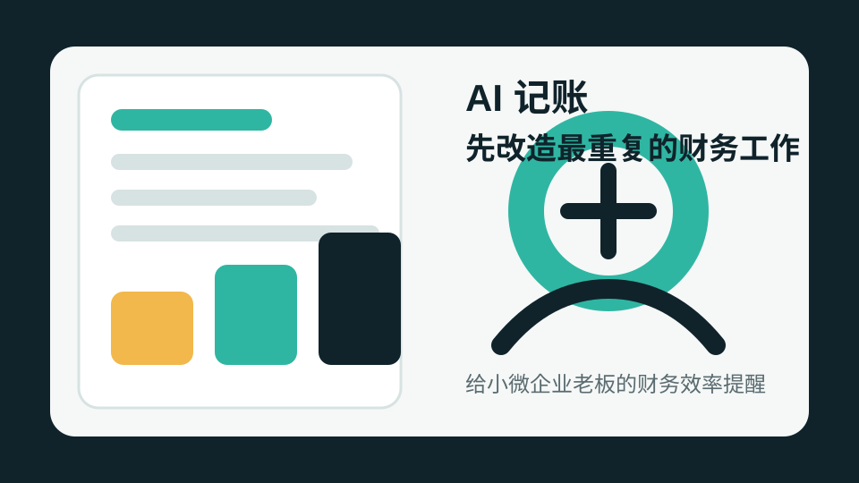
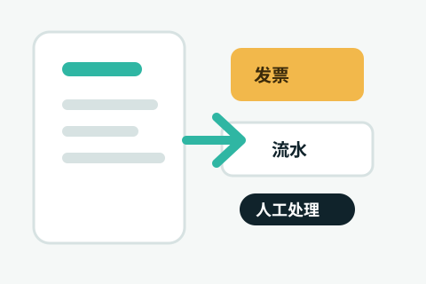
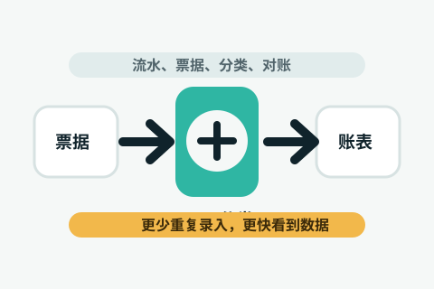

1
AI 正在重塑小微企业财务效率
企业服务 / 适合公众号文章 / 可引出 AI 记账自动化。
企业服务 / 适合公众号文章 / 可引出 AI 记账自动化。
政务 / 适合攻略型文章 / 可做流程提醒和避坑清单。
科技 / 适合观点型文章 / 可引出老板的 AI 认知焦虑。
推荐理由：能把 AI 焦虑落到财务成本和经营效率。
推荐理由：适合讲清楚自动化路径，降低理解门槛。
推荐理由：清单型文章更适合收藏和转发。
基于已生成文章统一生成封面图和正文配图，图片属于同一个步骤。

用于首屏点击，强调 AI 记账、老板、财务效率。

展示票据、流水、人工记账分散处理的问题。

展示 AI 从票据到分类、对账、账表的处理路径。
很多小微企业老板已经感受到，AI 不是遥远概念，而是在改变企业里最重复、最耗人力的工作。
财务人力成本高、票据流水处理慢、月底才知道盈亏，这些问题每个月都会消耗老板的时间和现金流。
私信关键词【AI记账】，邀请进老板 AI 咨询群。
文章、图片和排版已完成。当前原型不自动发布到平台后台，点击后进入草稿箱保存为待发布状态。
| 任务 | 平台 | 频率 | 状态 |
|---|---|---|---|
| 每日抓取行业热点 | 全平台 | 每天 09:00 | 预留 |
| 每周生成选题池 | 公众号 | 每周一 10:00 | 预留 |
| 标题 | 平台 | 保存阶段 | 更新时间 | 操作 |
|---|---|---|---|---|
| 为什么小微企业老板应该先用 AI 改造记账 | 微信公众号 | 文章已完成，待生成图片 | 2026-07-02 14:20 | |
| 小微企业财务自动化，从这 5 个环节开始 | 微信公众号 | 标题已确认 | 2026-07-01 18:10 |
| 账号 | 平台 | 作品数 | 线索 |
|---|---|---|---|
| AI 记账工具公众号 | 微信公众号 | 8 | 32 |
| 好财 AI 助手 | 小红书 | 12 | 9 |
AI 记账工具公众号
好财 AI 助手
好财集团视频号
好财 AI 记账